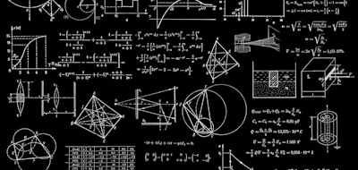
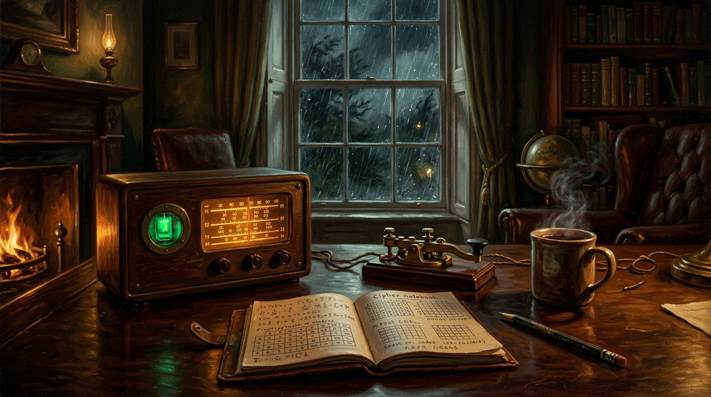

🔮
Gareth's Esoteric Creations & Labs
Maths • Patents • Radio
Sprucefield OEIS Number Theory • UKIPO Patent GB2625794.9 • Belfast Shortwave Radio • 4-Track Tape & 3D Arcana
/
 2026 Engine • Part 4
★ NEW
2026 Engine • Part 4
★ NEW
C1 Part 4 Deconstructor
Interactive 4-step elimination workbench: strike out echoes, inspect tense harmony, check voice shift & solve
3–6 Words
Echo Striker
C1/C2
 2026 Engine • Syntax
★ NEW
2026 Engine • Syntax
★ NEW
IELTS & C1 Syntax Workbench
Master preparatory 'It', passive reporting, cleft sentences, negative inversions & participle clauses
C1 Formulas
Band 7.5+
Live Drills
 2026 Engine • Speaking
★ NEW
2026 Engine • Speaking
★ NEW
Speaking Part 2 Arc Trainer
4-keyword margin trigger pad + live 3-Act Story Arc timer (30s Past → 45s Core Scene → 45s Reflection)
3-Act Arc
4 Keywords
Part 2 Timer
2026 Engine • Biomathematics
★ NEW
Adaptive Oncology Washout Lab
Interactive Lotka-Volterra competitive release & pharmacokinetic drug-holiday washout simulator
Lotka-Volterra
Washout ODE
Phase Portrait

2026 Engine • 9 OEIS Proofs ★ 4 DOIsSprucefield Research Hub
Exact BigInt verifiers for Arithmetic Diamond determinants, Shifted Smith n=14 transition & OEIS proofs
OEIS A109813
A392191
BigInt Verifier
⚗️
Live Sandbox Experiment: The 4-Step Part 4 Echo-Striker & C1 Syntax Detector
Eliminate the Echoes, Isolate the Deficit & Inspect Your C1 Syntax Live
Test Gareth's 4-step Key Word Transformation method on 6 authentic Cambridge C1/C2 items below. Keep the keyword 100% unchanged and write between 3 and 6 words.
Solved: 0 / 6
Step 1: Strike Out the Echoes
Cross out every word from Sentence 1 that already appears in Sentence 2 to isolate the exact meaning left behind.
Step 2: Inspect Tense Harmony
Check the tense of Sentence 1 (past simple, present perfect, modal) so your gap matches the original timeframe.
Step 3: Check Voice Shift
Spot whether Sentence 2 flips the subject from active to passive (or personal to impersonal reporting).
Step 4: Solve the Pattern (3–6 Words)
Fit the remaining meaning into the fixed C1 grammatical frame without altering the keyword in any way.
🔎 Live C1 Syntax Detector (5 High-Scoring Structural Devices)
Paste or type a paragraph below (or load a sample) to verify which C1 grammatical structures are active in your writing:
5 / 5 C1 Structural Devices Detected
Aim for 3 to 4 natural structural shifts per essay — confident, clear, and purposeful.
1. Preparatory 'It'
It + BE + adj/V3 + that...
2. Passive Reporting
...is/are believed/said to...
3. Cleft Sentence
What + Clause + BE...
4. Negative Inversion
Not only / Little / No sooner...
5. Participle Clause
..., thereby + V-ing
OEIS & 4 DOIs
★ MATHS
Sprucefield Research • Maths & 9 OEIS Proofs
Live BigInt verifiers for Arithmetic Diamond matrices, n=14 Shifted Smith phase transition & 5 OEIS proofs
OEIS A109813
A392191
4 Zenodo DOIs
UK Patent GB2625794.9
★ PATENT
UKIPO Patent GB2625794.9 • SPAD ToF Workbench
Sigma-Weighted SPAD Torso-Plane Time-of-Flight & Optical-Reflex Apparatus live telemetry simulation
GB2625794.9
SPAD ToF
Optical Reflex

6 Shortwave Stations ★ RADIOThe Belfast Midnight Shortwave Receiver
Yokohama • Beyoğlu • Belfast receiver with analog tuning dial, noise bed & numbers station
Shortwave
Vacuum Tube
Analog Dial
4-Track & TB-303
★ ANALOG
The Belfast Tape Lab • 4-Track Workstation
Tactile 1980s polyphonic synth, 6-voice post-punk drum machine, Euclidean generator & cassette dubbing
4-Track
Euclidean
TB-303
Official Filing • 15 Claims
★ GB2625794.9
UKIPO Patent Specification & Drawings
Full UK patent specification, 15 formal claims, One IPO abstract and technical drawings (Figs 1–6)
Specification
15 Claims
Figs 1–6
 OEIS Contributor Portal
★ 5 SEQUENCES
OEIS Contributor Portal
★ 5 SEQUENCES
OEIS Conjecture & Sequence Ledger
Resolutions for A109813 (20-yr '?' gaps), A392191 (Spezia conjecture), A339948, A227477 & A236864
PARI/GP
SymPy
Exact Proofs
 Council Debate • 7 Archetypes
★ COUNCIL
Council Debate • 7 Archetypes
★ COUNCIL
The Round Table: Council of 7 Voices
Critic, Creative, Technical Architect, Rebel, Magician, Fool & Born-to-Lose Outlaw clash and debate
7 Personas
Debate Engine
Dialectic
 Deep-Sea Acoustic • Hydrophone
Deep-Sea Acoustic • Hydrophone
The Abyssal Bathysphere
Deep-sea pressure chamber immersion with hydrophone soundscapes, hull creaks & bioluminescent depths
Deep Hydrophone
Atmospheric
Sub-surface
3D WebGL • Celestial Mechanics
Brass Orrery & Celestial Memory Palace
3D mechanical solar system, brass gear trains, orbital harmonics and spatial memory chambers
3D Orrery
Clockwork
Spatial Memory
Mechanical Levers • Mountain Rail
The Darjeeling Signal Box
Interlocking mechanical levers, brass bells, telegraph block instruments & mountain railway block working
Interlocking
Telegraph Bell
Himalayan Rail
Latin & Greek • Aeneas ML
Epigraphy Decoder & Text Restoration
Neural ancient text restoration, missing letter infilling & geographic provenance analysis via Aeneas models
Aeneas
Inscriptions
Restoration
 Victorian Deduction • Crime
Victorian Deduction • Crime
The Gaslight Inquisitor
Victorian psychological interrogation engine; dissect suspect contradictions, alibis, and physical clues
Interrogation
Psychology
Deduction